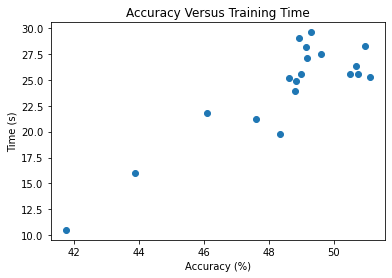

To first understand the random forest algorithm, it is important to understand, at a high level, decision trees. Specifically, this model uses classification trees, because the intented output is categorical, as opposed to a continuous variable. In a decision tree, the leaves represent classes, while the branches represent conjunctions of attributes that lead to that class. The conjunctions are typically yes/no or true/false questions that will lead to one class or another. For large datasets, these trees can grow very large and complex.
A random forest algorithm works in a similar way to a decision tree, but instead of making one large tree, it takes a subset of the data and creates many smaller trees. While these trees have weaker predictive power than a larger decision tree, collectively these trees can become very powerful. In these algorithms, it is important to set the number of trees to be made in the forest. For this project, 200 was chosen. In this project, both a decision tree and random forest algorithm were implemented on the full dataset. The goal of the algorithms were to predict the amount of shares for the articles based on article characteristics. There were 3 categories in the dataset, with each category having the same number of articles. Therefore, randomly guessing would result in a 33% success rate. The results are shown below.
| Algorithm | Accuracy (%) | Time (s) |
|---|---|---|
| Decision Tree | 42.0 | 1.46 |
| Random Forest | 50.9 | 26.46 |
As seen in the above table, the random forest algorithm performs better at predicting article success based on article attributes than the decision tree algorithm. However, this 8.9% increase in accuracy does come with a significant time increase, from 1.46 seconds to 26.46.
In addition to comparing the two algorithms, a deeper analysis into the random forest algorithm was performed. After the algorithm has been trained, all 58 features can be ranked by importance. For a deeper analysis, only the 3 most important features were used in an analysis. Then, the next 3 most important features were added, etc until the 57 most important features were added. Therefore, the algorithm was run 19 times with varying amounts of features used. Then, accuracy and time were analyzed for all 19 trials. The results are shown below.
As seen above, there is a clear positive correlation between accuracy and time required. This is to be expected. As more features are added, the results will become more accurate, but the models will take longer to train and run. It is important to note that there appears to be some randomness, especially towards the right of the graph. But, as a whole, it is clear there is a positive relationship between accuracy and time taken.